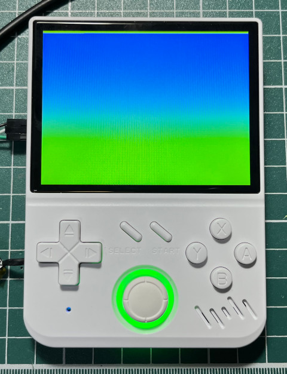

參考資訊：
https://gist.github.com/dvdhrm/5083553
https://www.kernel.org/doc/html/v4.15/gpu/drm-kms.html
https://github.com/grate-driver/libdrm/blob/master/xf86drmMode.h
https://gist.github.com/Miouyouyou/89e9fe56a2c59bce7d4a18a858f389ef
main.c
#include <stdio.h>
#include <stdlib.h>
#include <string.h>
#include <fcntl.h>
#include <time.h>
#include <sys/mman.h>
#include <unistd.h>
#include <xf86drm.h>
#include <xf86drmMode.h>
static int waiting_for_flip = 0;
static void flip_handler(int fd, unsigned int frame, unsigned int sec, unsigned int usec, void *data)
{
*((int *)data) = 0;
}
drmEventContext evctx = {
.version = DRM_EVENT_CONTEXT_VERSION,
.page_flip_handler = flip_handler,
};
int main(int argc, char *argv[])
{
const int w = 640;
const int h = 480;
const int bpp = 32;
const int depth = 24;
int i = 0;
int j = 0;
int r = 0;
int fd = -1;
uint32_t fb = 0;
drmModeRes *res = NULL;
drmModeCrtc *crtc = NULL;
drmModeEncoder *enc = NULL;
drmModeConnector *conn = NULL;
struct drm_mode_map_dumb mreq = { 0 };
struct drm_mode_create_dumb creq = { 0 };
struct drm_mode_destroy_dumb dreq = { 0 };
fd = open("/dev/dri/card0", O_RDWR | O_CLOEXEC);
res = drmModeGetResources(fd);
conn = drmModeGetConnector(fd, res->connectors[0]);
enc = drmModeGetEncoder(fd, res->encoders[0]);
crtc = drmModeGetCrtc(fd, res->crtcs[0]);
creq.bpp = bpp;
creq.width = w;
creq.height = h;
drmIoctl(fd, DRM_IOCTL_MODE_CREATE_DUMB, &creq);
drmModeAddFB(fd, creq.width, creq.height, depth, creq.bpp, creq.pitch, creq.handle, &fb);
mreq.handle = creq.handle;
drmIoctl(fd, DRM_IOCTL_MODE_MAP_DUMB, &mreq);
drmModeSetCrtc(fd, crtc->crtc_id, fb, 0, 0, (uint32_t *)conn, 1, &crtc->mode);
uint8_t *map = mmap(0, creq.size, PROT_READ | PROT_WRITE, MAP_SHARED, fd, mreq.offset);
uint32_t color[] = { 0xff0000, 0x00ff00, 0x0000ff };
uint32_t cc = 0;
while (1) {
uint32_t *p = (uint32_t *)map;
for (i = 0; i < h; i++) {
for (j = 0; j < w; j++) {
*p++ = color[cc % 3];
}
}
cc += 1;
waiting_for_flip = 1;
drmModePageFlip(fd, crtc->crtc_id, fb, DRM_MODE_PAGE_FLIP_EVENT, (void *)&waiting_for_flip);
while (waiting_for_flip) {
drmHandleEvent(fd, &evctx);
}
}
munmap(map, creq.size);
drmModeRmFB(fd, fb);
dreq.handle = creq.handle;
drmIoctl(fd, DRM_IOCTL_MODE_DESTROY_DUMB, &dreq);
drmModeFreeCrtc(crtc);
drmModeFreeEncoder(enc);
drmModeFreeConnector(conn);
drmModeFreeResources(res);
close(fd);
return 0;
}
編譯、執行
$ /opt/flip/bin/aarch64-linux-gcc main.c -O3 -o main -I/opt/flip/aarch64-flip-linux-gnu/sysroot/usr/include/libdrm -ldrm RuiSuo:~/roms # kill -STOP `pidof emulationstation` RuiSuo:~/roms # ./main
